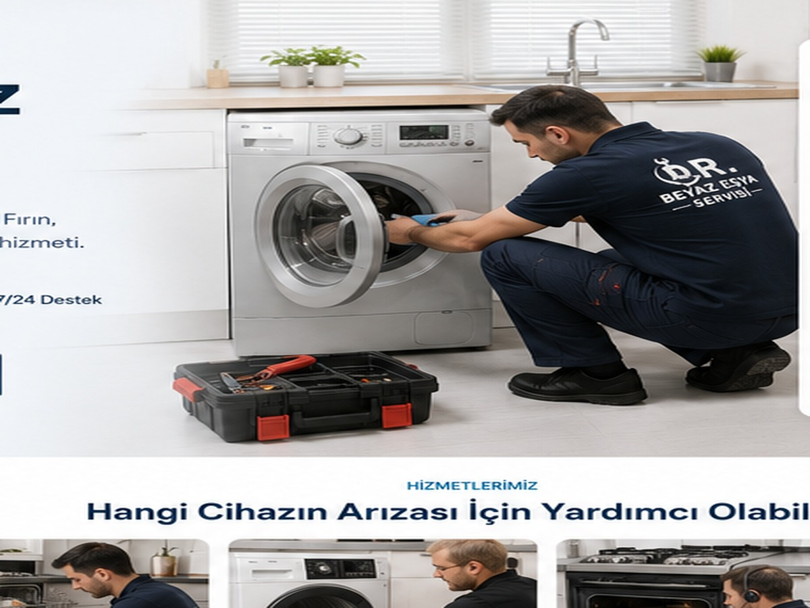

TEKNİK SERVİS
Buzdolabı Servisi
Soğutmama, aşırı ısınma, su akıtma, kompresör ve elektronik kart sorunlarında teknik inceleme ve servis desteği.
Hizmeti İncele →Buzdolabı, çamaşır makinesi, bulaşık makinesi, kurutma makinesi, fırın, ocak, klima, kombi ve derin dondurucu sorunlarında servis talebinizi kolayca oluşturun.

Arızanıza uygun hizmet sayfasından sık görülen sorunları inceleyebilir ve doğrudan iletişime geçebilirsiniz.
Soğutmama, aşırı ısınma, su akıtma, kompresör ve elektronik kart sorunlarında teknik inceleme ve servis desteği.
Hizmeti İncele →
Dönmeme, sıkmama, kapak, kazan, rulman, su akıtma ve elektronik kart sorunlarında yerinde teknik destek.
Hizmeti İncele →
Su akıtma, yıkamama, pervane, deterjan haznesi, tahliye ve elektronik kart sorunlarında teknik servis desteği.
Hizmeti İncele →
Kurutmama, ısıtmama, aşırı ses, filtre ve program sorunlarında teknik kontrol ve servis desteği.
Hizmeti İncele →
Isıtma, rezistans, termostat, ateşleme ve panel sorunlarında teknik destek ve arıza tespiti.
Hizmeti İncele →
Klima bakım, temizlik, performans kontrolü ve uygun arızalarda teknik destek için servis talebi oluşturabilirsiniz.
Hizmeti İncele →
Isınma, sıcak su, basınç ve genel çalışma sorunlarında teknik destek talebinizi iletebilirsiniz.
Hizmeti İncele →
Soğutmama, aşırı buzlanma, ses ve elektronik kontrol sorunlarında teknik servis desteği.
Hizmeti İncele →
Cihaz türünü ve yaşadığınız sorunu paylaşın.
Marka, model ve arıza belirtisini mümkün olduğunca net yazın.
Uygunluk durumuna göre talebiniz değerlendirilir.
Yapılan işlem sonrasında temel çalışma kontrolleri gerçekleştirilir.
Yorumları kopyalayıp sabitlemek yerine ziyaretçileri doğrudan işletmenin güncel Google profilindeki değerlendirmelere yönlendiriyoruz.
Hizmet aldıysanız yorum bırakın →Fotoğraflar cihaz türü kesin olarak anlaşılmadığında yanlış kategoriye zorlanmadan, genel teknik çalışma olarak açıklanmıştır.
 Soğutma sistemi incelemesi
Soğutma sistemi incelemesi Cihaz mekanizması kontrolü
Cihaz mekanizması kontrolü Elektronik kontrol sistemi
Elektronik kontrol sistemi Parça ve bağlantı incelemesi
Parça ve bağlantı incelemesi Gerçek teknik servis çalışması
Gerçek teknik servis çalışmasıArçelik, Bosch, Siemens, Profilo, Samsung, Altus ve farklı marka/model cihazlar için arıza bilgisi paylaşabilirsiniz.
Evet. Cihaz türünü, marka-modelini ve sorununuzu WhatsApp üzerinden iletebilirsiniz.
Evet. Yabancı müşteriler için English Support sunulmaktadır.
Pendik, Kurtköy ve yakın çevre için konum ve cihaz bilgisi paylaşarak uygunluğu sorabilirsiniz.
Telefon veya WhatsApp üzerinden cihaz türünü, marka-modelini ve arıza belirtisini paylaşabilirsiniz.